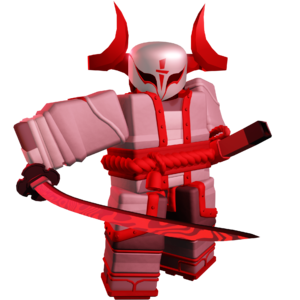
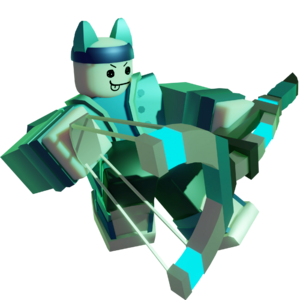

PHIGHTING! is a class-based third person shooter released on ROBLOX and developed by the small development team boggio. Its gameplay consists of 15 classes that are split into three categories (melee, ranged, support) where each class has their own unique abilities. Inspired by other games like Team Fortress 2 and Overwatch, there are three modes: Annihilate, Conquer, Escort.
I would like to become better at three different classes because currently, all I do is play characters that are simply point and click (a non-skill based game). And since I play those characters, a lot of the time they are taken and I have to quickly learn a new ability set, which is not good. So, I have come to ChatGPT to see if they have a guide, or at the very least anything, on PHIGHTING!
Guides
Got it! PHIGHTING! has very different playstyles per character, so I’ll break each one down into role, core abilities, how to play them, combos, positioning tips, and common mistakes. This should help you actually feel how they’re meant to be played, not just what buttons to press.
🗡️ Katana — High-Skill Melee Duelist
Role: Assassin / Skirmisher
Difficulty: High
Playstyle: In-and-out fights, precision, reading opponents

What Katana Is Good At
- Winning 1v1s
- Bursting squishy enemies
- Punishing bad positioning
- Snowballing momentum
Core Game Plan
You are not a tank. Katana wins fights by:
- Engaging quickly
- Dealing burst damage
- Disengaging before getting focused
Think hit → pressure → escape, not brawl forever.
How to Play Katana Well
- Pick isolated targets (Slingshot, Medkit, Rocket)
- Dash in when enemies are distracted
- Save mobility for escape, not just engage
- Abuse corners and cover to avoid ranged fire
Combos & Flow (Simple Version)
- Engage → basic attacks
- Use abilities to stick to target
- If enemy turns or backup arrives → disengage immediately
Positioning Tips
- Flank from sides or behind
- Never run straight at grouped enemies
- Stay near cover so you can break line-of-sight fast
Common Mistakes
❌ Diving into 2–3 enemies
❌ Chasing too long
❌ Using all movement abilities at once
❌ Playing Katana like a tank
Mindset:
“I win fights by choosing when they happen.”
🏹 Slingshot — Mobile Ranged Harasser
Role: Ranged DPS / Poke
Difficulty: Medium
Playstyle: Constant movement, pressure, zoning

What Slingshot Is Good At
- Chipping enemies from range
- Staying hard to hit
- Forcing enemies out of position
- Finishing low-health targets
Core Game Plan
Slingshot thrives on:
- Movement
- Spacing
- Consistency
You win by outlasting enemies, not bursting them instantly.
How to Play Slingshot Well
- Always be moving
- Keep enemies at mid-range
- Pressure tanks and supports safely
- Relocate often to avoid being targeted
Combat Tips
- Fire while strafing
- Punish enemies who stand still
- When a melee dives you → kite backward
- Use mobility defensively, not aggressively
Positioning Tips
- High ground is your best friend
- Stay near teammates but not stacked
- Play around open sightlines
Common Mistakes
❌ Standing still to aim
❌ Overcommitting to chase kills
❌ Playing too close to melee characters
❌ Ignoring repositioning
Mindset:
“If they can’t catch me, I’m winning.”
Is it correct?
This is so funny to me how much they know about a niche game, and how much information it has to give. I have played with these characters once or twice before, but not enough to be good at it. The information given is correct and the advice is pretty accurate, but I have no clue how much of it I will remember by the next time I play the game. And hopefully, I won’t be dead weight when any of the characters I play the most are selected before I can get my hands on them. Still, this is a pretty decent guide, especially for people who have never played any game like this one.